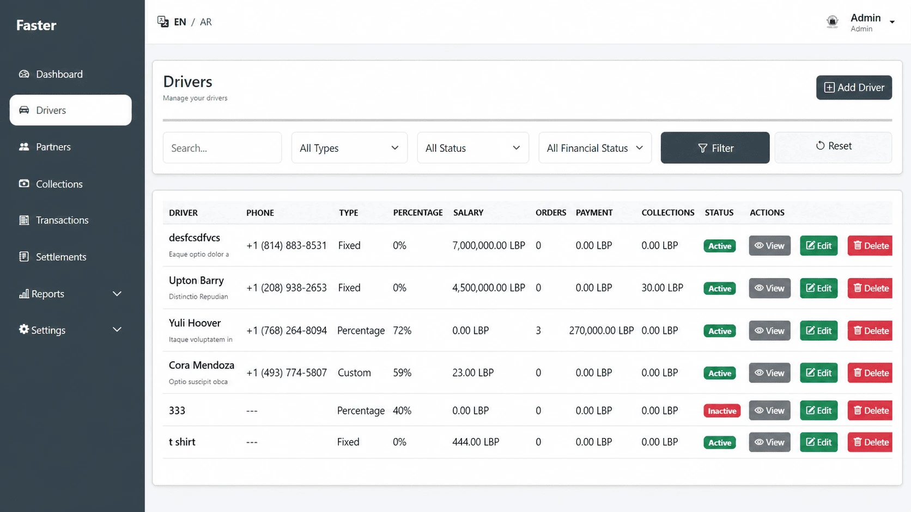
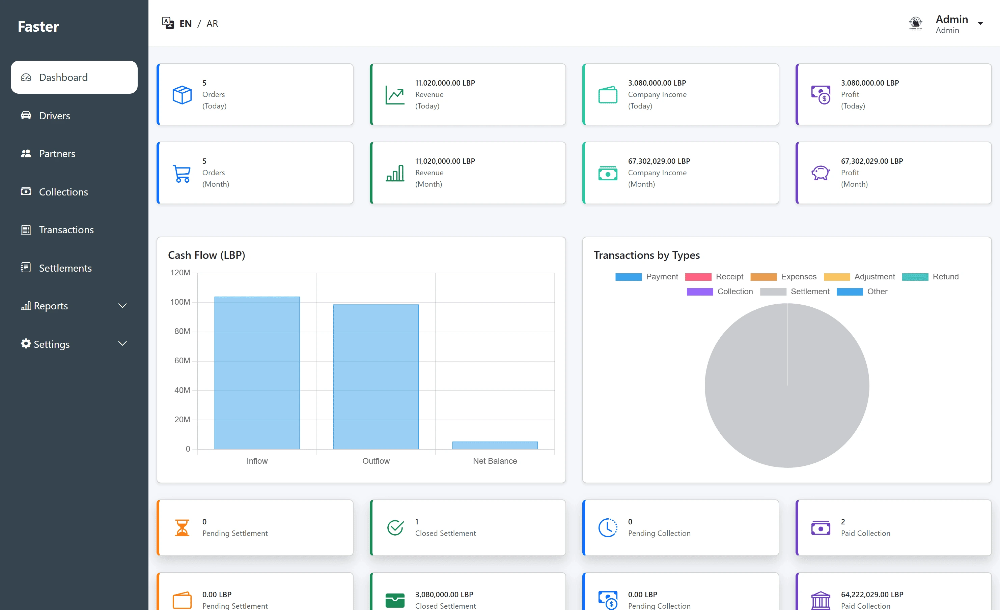
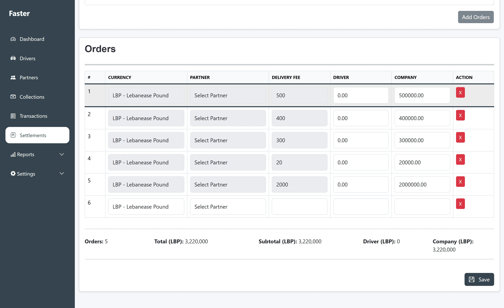
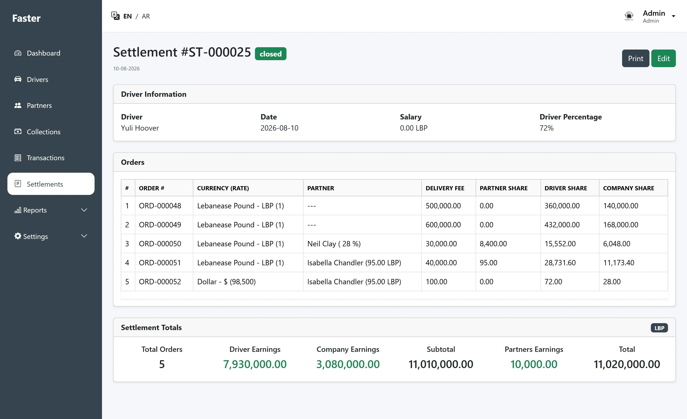
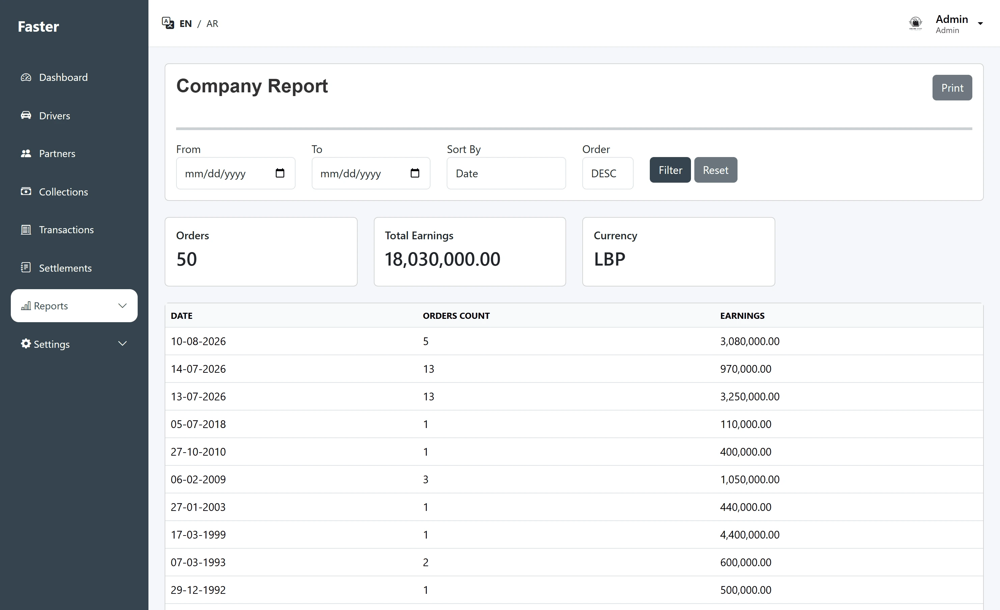

Delivery Financial Management System
A custom financial and operational system built around the real workflow of a delivery company, replacing manual calculations and scattered records with one organized platform.

A workflow that needed more than paper and spreadsheets.
Paper-based calculations
The company calculated orders, driver settlements and financial totals manually on paper. The process consumed time and made previous records difficult to organize and recover.
MANUAL PROCESSExcel wasn't enough
Spreadsheets were introduced to improve organization, but they were difficult for the team to maintain and couldn't comfortably cover the company's full workflow.
LIMITED SOLUTIONA system built around their process
I studied how the company already calculated orders, profits and settlements, then translated that process into a dedicated system instead of forcing the company to adapt to a generic workflow.
CUSTOM SOLUTIONOne connected process from orders to reporting.
The system connects the company's operational and financial workflow, handling settlements, transactions and multi-currency calculations while keeping the exchange rates used in financial records.
From scattered work to one organized system.
Manual financial calculations
Paper-based records
Information spread across different places
Difficult historical lookup
Manual currency conversions and rate tracking
System-calculated financial totals
Centralized digital records
Operational and financial data in one place
Searchable historical information
Exchange rates recorded with financial operations
Core business operations in one platform.
Order Management
Centralized order records used throughout the company's settlement workflow.
Driver Settlements
Structured settlement processing based on the company's existing calculation rules.
Collections
Tracking financial collections and their relationship to business operations.
Financial Transactions
Organized records for incoming and outgoing financial movements.
Drivers & Partners
Management of the people and businesses involved in the delivery workflow.
Reports & Dashboard
Clear summaries and reports for reviewing operational and financial activity.
Multi-Currency & Exchange Rates
Supports financial operations across multiple currencies while tracking exchange rates used for calculations and historical financial records.
Activity & Audit Logs
Records who performed each action, what was changed and when it happened, providing a traceable history of activity across the system.
Built around daily business operations.




From business workflow to working software.
I developed the system independently. My work included understanding how the company handled its financial calculations, designing the database and system structure, building the backend functionality, and creating the user interface used to manage daily operations.
Built as a custom full-stack web application.
The system was developed using my primary web application stack.
Username: admin
Password: admin123